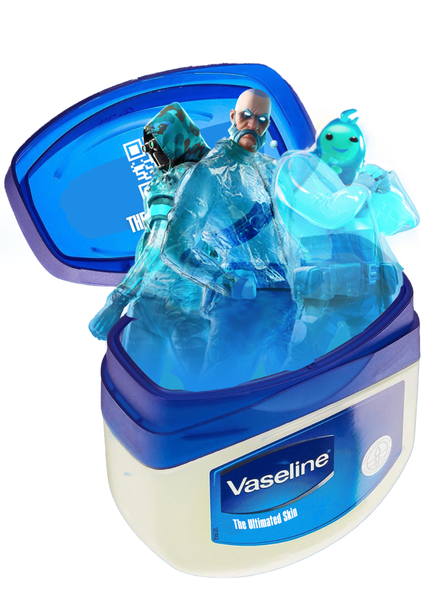

THE ULTIMATE SKIN
DATA:
1 in 3 men believe that skincare is unmanly.
PROBLEM:
The fear of judgment from other men makes many avoid skincare, seeing it as a threat to their masculinity.
INSIGHT:
In gaming, there is no judgement for those who look for the best skin, why can't it be the same in real life?
SOLUTION:
Position skincare as an act of confidence and security, where another man's judgement is no longer a threat.
IDEA:
In video games, having the best skin is a mark of honor a sign of skill and style.This is why Vaseline presents: The Ultimate Skin. A campaign that aims to remind young boys that there’s no sense in judging skincare, because having great skin has ALWAYS been cool.


“Spoiler: lo que viene después de tanto scroll es que me escribas.”